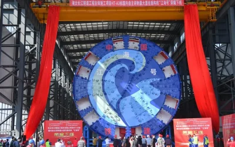
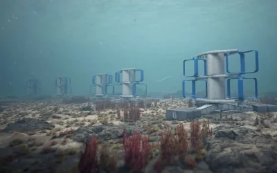

NOTICIAS
La nueva tuneladora construirá un túnel bajo el río Yangtsé en la provincia de Jiangsu, conectando las ciudades de Nantong y Suzhou. China ha completado la fabricación de su mayor tuneladora, que mide 16.64 metros de diámetro.
La Unión Europea ha otorgado $55,1 millones (€51 millones) para establecer dos granjas de energía mareomotriz en Francia.
NOTICIAS POPULARES
La misión china Shenzhou-
20 despega con tres
astronautas a bordo para
relevar a la tripulación de
la estación espacial Tiangong
A lo largo de su estancia de
seis meses, los astronautas
llevarán a cabo investigaciones
científicas y actividades
extravehiculares, además de
pruebas técnicas y
experimentos con organismos
como planarias y peces cebra